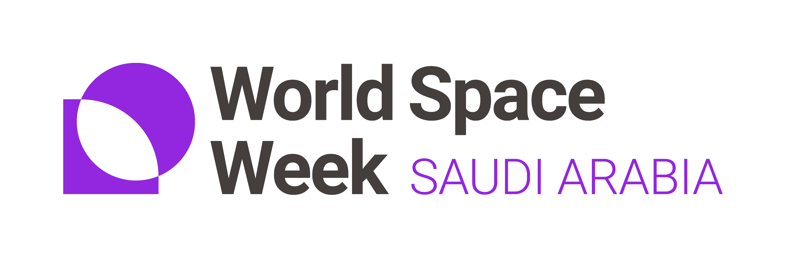

إعادة تحميل الصفحة
تأكيد
رجوع
أبولو 11: التجربة
“خطوة صغيرة لرجل، وقفزة عملاقة للبشرية.”
— نيل أرمسترونغ
أبولو 11 · سطح القمر · 1969
أبولو 11: التجربة
ابدأ
الإعدادات
بيانات الطالب
اسم الطالب
الصف
تأكيد
رجوع

الإعدادات
ملء الشاشة
غير مفعل
اللغة
العربية
English
إظهار الأرض
مفعل
اسم رائد الفضاء
قاعدة بيانات الطلاب
تصدير students.json
حذف قاعدة البيانات
حذف
لون بدلة رائد الفضاء
رجوع
تأكيد
رجوع
الإعدادات
الصور
الظواهر القمرية
بدء لعبة جديدة
FPS: --
النبذة
الوصف
الإشراف
المدير: ماهر العبيد • الأستاذ: عبدالله المصري
الطالب: محمد حمد عبدالغفار يوسف • المدرسة: ثانوية اليمامة
الصور
لا توجد صور بعد.
جهّز الكاميرا بالضغط على 2، ثم Q لوضعها، ثم انقر بزر الفأرة الأيسر للنظر من خلالها والتقاط صورة.
رجوع
تنزيل
حذف
إغلاق
+
1
🇸🇦 العلم
2
📷 الكاميرا
3
4